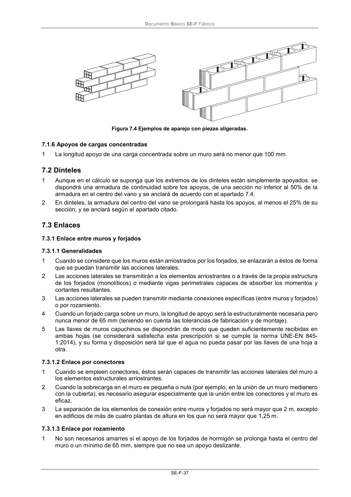

DB-SE-F · 7.1.5 Detalle de aparejos de fabrica · versión 2019-12-20 · capa oficial
Formatos: JSON compacto · Markdown · PDF fuente
Ámbito del documento · texto del ámbito · documento y tablas
ID técnico a0079 · PDF pág. 40-41 · jerarquía no validada por persona · contrastado con el literal de la página 40 (candidato tipográfico); no validado por persona · padre: raíz
7.1.5 Detalle de aparejos de fabrica 1 Para poder emplear los valores y ecuaciones del apartado 4.6 y del anejo C, el espesor de los tende- les y de las llagas de mortero ordinario o ligero no será menor que 8 mm ni mayor que 15 mm, y el de tendeles y llagas de mortero de junta delgada no será menor que 1 mm ni mayor que 3 mm. Las figuras 7.2, 7.3 y 7.4 muestran distintos tipos de aparejo. Figura 7.2 Ejemplos de aparejo con piezas macizas. Figura 7.3 Ejemplos de aparejo con piezas aligeradas y huecas. Documento Básico SE-F Fábrica SE-F-37 Figura 7.4 Ejemplos de aparejo con piezas aligeradas.

PDF fuente redistribuible: copia fiel enlazada en esta página (SHA256 verificado).